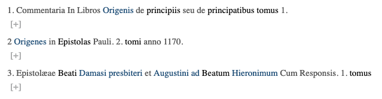
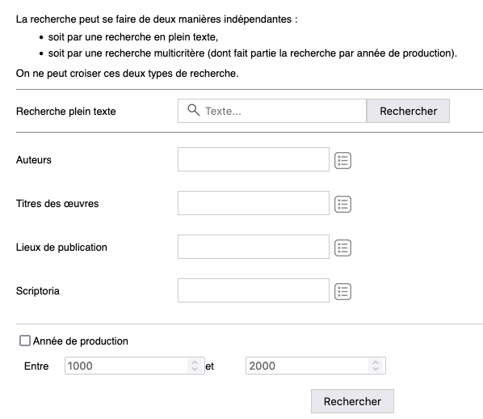

Plugins
Un plugin est une brique logicielle proposant une fonctionnalité supplémentaire au noyau de l’application MaX. Il est activé (désactivé par défaut) pour une ou plusieurs éditions numériques. Il peut être constitué de ressources RestXQ, XSL, Javascript, CSS...
MaX propose un ensemble de plugins placés dans le dossier plugins. Le script max.sh permet l’activation/désactivation de ces plugins.
- Se placer dans le dossier tools :
cd le/chemin/vers/le/projet/[projet-]MaX/tools
- lister les plugins disponibles
./max.sh --list-plugins
=> Si le message suivant s’affiche Please install BaseX or set $BASEX_PATH environment variable, il faut alors indiquer le chemin vers le dossier contenant l’application BaseX au moyen de la commande suivante :
export BASEX_PATH=../../[projet-]basex
Puis refaire ./max.sh --list-plugins
Le terminal affiche alors la liste des plugins disponibles, ceux inutilisés et ceux activés.
Nota Bene
Si certains plugins apparaissent déjà comme activés (enabled) alors que vous n’avez
jamais lancé vous-même la procédure d’activation ci-dessous, il est nécessaire d’effectuer
cette procédure d’activation pour que le plugin fonctionne.
- Activer un plugin
./max.sh --enable-plugin [plugin_name] [mon-edition]
- Désactiver un plugin
./max.sh --disable-plugin [plugin_name] [mon-edition]
Une fois activé via la ligne de commande ./max.sh, le plugin est automatiquement inscrit dans le fichier de configuration de l’édition dans laquelle il a été autorisé : [projet-]editions/[edition]/mon-edition_config_inc.xml. Il se retrouve au sein d’un élément <plugin name='plugin_id'/> de la section <plugins/> de ce fichier. Dans chaque élément <plugin>, d’éventuels paramètres de configuration du plugin en question pourront être spécifiés.
<plugins>
<!-- exemple de l’activation du plugin breadcrumb -->
<plugin name="breadcrumb">
<parameters>
<parameter key="topLabel" value="Sanctoral – Beata Maria"/>
</parameters>
</plugin>
</plugins>
Fonctionnement des plugins
Lors de la consultation d’un fragment, MaX exécute l’ensemble des Xquery des plugins actifs respectant la convention de nommage : plugins/[NOM_PLUGIN]/[NOM_PLUGIN].xq.
Par exemple :
Chaque XQuery reçoit en paramètres d’entrée les variables suivantes :
- $baseURI : valeur de la variable baseURI,
- $dbPath : nom de la base de données XML du projet,
- $project : identifiant du projet,
- $doc : document consulté,
- $id : id consulté.
Les résultats de ces appels sont renvoyés dans un nœud HTML <div class='plugins-wrapper'/> qui précède le contenu « textuel » XML transformé.
Pour l’édition de démonstration par exemple, on obtient :
[...]
<div class="plugins-wrapper">
<div class="apparat-witnesses"> ...</div>
<div id="breadcrumb">...</div>
</div>
<div id="text">
[...]
</div>
[...]
Les XSL des plugins activés qui respectent la convention de nommage plugins/[NOM_PLUGIN]/[NOM_PLUGIN].xsl sont automatiquement appliquées.
Par exemple :
Plugins et dépendances Javascript
Certains plugins ont des dépendances vers des bibliothèques javascript (par exemple img_viewer requiert OpenSeadragon). Ces bibliothèques sont incluses dans chacun des plugins.
Abréviation
Développer ou non les abréviations (balises tei:ex & tei:am).
<plugin name="abreviation"/>
-
Exemple de texte sans l’option Abréviation :
-
Exemple de texte avec l’option Abréviation : 
Ajout
Afficher/masquer les interventions, ajouts, suppressions (balises tei:ad & tei:del), via les options de lecture.
<plugin name="ajout"/>

-
Exemple de texte sans l’option Ajout :

-
Exemple de texte avec l’option Ajout (ajouts en orange, suppressions barrées en noir) :
Apparat critique
Affichage des différents témoins restitués par un apparat critique :
<plugin name="apparat_critique"/>
Une fenêtre proposant l’affichage par témoin apparaît si le fichier xml contient les balises <listWit><witness @xml:id>.
<!-- dans le fichier xml -->
<listWit>
<witness n="utile" xml:id="V">
[...]
</witness>
<witness n="utile" xml:id="O">
[...]
</witness>
</listWit>
Le contenu des différents témoins est ensuite géré à l’intérieur des balises <app>, puis <lem>et <rdg>.
<!-- dans le fichier xml -->
<app xml:id="c">
<lem wit="V">
La variante que l’on veut garder dans l’affichage par défaut
</lem>
<rdg wit="O">
Une autre variante
</rdg>
<rdg wit="P">
Une autre variante
</rdg>
</app>
Lors du rendu final, en sélectionnant un témoin particulier, pour chaque balise app rencontrée, ne seront affichées que les balises lem ou rdg qui auront pour attribut @wit le nom du témoin.
Breadcrumb (Fil d’Ariane)
Affichage du fil d’Ariane lors de la consultation du texte.
Un fil d’ariane (ou breadcrumb en anglais) est une aide à la navigation, pour permettre au lecteur de se situer dans le site.
Exemple d’un fil d’ariane :
Le paramètre $topLabel permet de configurer le label de la racine du fil d’Ariane.
<plugin name="breadcrumb">
<parameters>
<parameter key="topLabel" value="Sanctoral – Beata Maria"/>
</parameters>
</plugin>
Correction
Afficher/masquer les erreurs et leurs corrections (balises tei:sic et tei:corr), via les options de lecture.
<plugin name="correction"/>
-
Exemple de texte sans l’option Correction (le contenu de la balise
tei:sicest en rouge, avec le terme [sic]) : -
Exemple de texte avec l’option Correction (le contenu de la balise
tei:correst en vert entre crochets) :
Diplomatique
Plugin rassemblant les plugins abréviation (balises tei:ex et tei:am), correction (balises tei:sic et tei:corr), et normalisation (balises tei:reg et tei:orig).
<plugin name="diplomatique"/>
EAD basket
Ce plugin permet d’utiliser le porte-document dans le cadre des éditions en EAD.
<plugin name="ead_basket"/>
Lorsque vous cochez la case (capture d’écran ci-dessus), le document est alors enregistré dans le porte-document. Pour voir le contenu du porte-document (capture d’écran ci-dessous), cliquer sur le lien "porte-documents".
EAD to PDF
Le fait d’activer ce plugin, déclenche l’affichage d’un bouton permettant de générer un pdf dans une édition en EAD.
<plugin name="ead_pdf"/>
L’url permettant d’activer cette fonctionnalité :
http://[host]:[port]/[edition]/[document].xml/[id].pdf
Par exemple :
http://localhost:17002/mon-edition/monFichier.xml/div1.1.pdf
EAD metadata
Ce plugin permet d’afficher les métadonnées d’une édition en EAD contenues dans les balises <eadheader> et <archdesc>.
<plugin name="ead_metadata"/>
Index
Permet de générer différents index pour les documents en EAD : personnes, lieux, documents, etc.
<plugin name="index"/>
Les index étant trop spécifiques pour permettre la mise en place d’un traitement par défaut satisfaisant, ce plugin propose donc une route* unique pour chaque index, solution pour systématiser la production des index ainsi que les routes correspondantes.
Il permet de limiter les temps de calcul en stockant les fragments html de chaque page d’index.
L’URL associée à un index est http://[serveur:port]/[projet]/index/[typeindex].html
typeindex: valeur choisie par l’utilisateur (par exempleindex/lieux.htmlouindex/personnes.html).
Par exemple : http://localhost:17002/mon-edition/index/lieux.html
Cela nécessite de créer un dossier index dans les dossiers suivants :
- [projet-]editions/[projet]/xq
- [projet-]editions/[projet]/ui/xsl
- [projet-]editions/[projet]/fragments/[langueLocale]
On place dans le dossier xq/index un fichier nommé index_[typeindex].xq qui permettra de générer l’index. Par exemple, pour un index de Lieux, un fichier index_lieux.xq :
declare variable $dbPath external;
declare variable $project external;
declare variable $baseURI external;
<index type="lieux">
{for $idx in collection($dbPath)//*:geogname[@normal] | collection($dbPath)//*:corpname[@normal]
let $cId := $idx/ancestor::*:c[@id][1]/@id
let $baseuridb := substring-after(base-uri($idx), $dbPath)
let $cOtherlevel := $idx/ancestor::*:c[1]/@otherlevel
let $role := $idx/@role
let $initiale := substring($idx/@normal,1,1)
let $cUnitid := $idx/ancestor::*:c[1]/descendant::*:unitid[1]/text()
let $cParent := $idx/ancestor::*:c[@otherlevel]/descendant::*:unitid[1]/text()
let $result :=
<marker id="{$cId}" otherlevel="{$cOtherlevel}" role="{$role}">
<entry>{$cUnitid}</entry>
<manuscrit>{$cParent}</manuscrit>
<value>{data($idx/@normal)}</value>
<baseuri>{$baseURI || $project || $baseuridb}</baseuri>
<initiale>{translate($initiale,'É[','E')}</initiale>
</marker>
return $result
}
</index>
Si nécessaire, on surcharge avec une XSL dans le dossier ui/xsl/index avec un fichier index_[typeindex].xsl.
Lors du premier accès à la page [projet]/index/[typeindex].html, un fichier HTML (index_[typeindex].frag.html) est généré dans le dossier fragments/[langueLocale]/index : la requête XQUERY et le traitement XSL associé sont exécutés lors de ce premier appel.
Pour générer à nouveau la page d’index, il faut supprimer le fichier index_[typeindex].frag.html souhaité, et relancer la page [projet]/index/[typeindex].html.
Normalisation
Afficher/masquer la normalisation de l’éditeur (balises tei:reg & tei:orig), via les options de lecture.
<plugin name="normalisation"/>
Exemple de texte sans l’option Normalisation :
Exemple de texte avec l’option Normalisation :
Recherche EAD (ead_search)
Voici un exemple de configuration du plugin de recherche :
<plugin name="ead_search">
<parameters>
<parameter key="searchForm">
<search>
<tags>
<tag name="persname" attribute="role" value="auteur" label="Auteurs"/>
<tag name="title" attribute="type" value="Oeuvre" label="Titre des œuvres"/>
<tag name="geogname" attribute="role" value="publication" label="Lieux de publication"/>
<tag name="corpname" attribute="role" value="scriptorium" label="Scriptoria"/>
</tags>
<dates format="YYYY"/>
</search>
</parameter>
</parameters>
</plugin>
- tag : nom de l’élément XML dans lequel les recherches sont effectuées, avec
namepour le nom de la balise,atributepour l’attribut voulu dans la balise etvaluepour la valeur de l’attribut. - Les balises
ead:namevisées par la recherche (ici persname, title, geogname, corpname) doivent absolument posséder un attribut@normaldans le document XML pour être prises en compte par la recherche.
La recherche est accessible à cette URL :
http://[host]:[port]/[edition]/rechercher.html

Recherche TEI (search)
Voici un exemple de configuration du plugin de recherche :
<plugin name="search">
<parameters>
<!--Les recherches sont effectuées dans toutes les balises p, app, lem et rdg
(et leurs descendants)-->
<parameter key="tag" value="p app lem rdg"/>
<!--Pour chacun des résultats, le lien de retour au texte pointe
vers la div ancêtre identifiée ayant un @ type-->
<parameter key="backToTextID" value="(./ancestor::*:div[@*:type])[1]/@xml:id"/>
</parameters>
</plugin>
<docsToIgnore>
<docToIgnore>monfichier.xml</docToIgnore>
</docsToIgnore>
- value : nom des balises TEI dans lequel les recherches sont effectuées,
- backToTextId : xpath à suivre pour les liens de retour au texte sur les éléments de résultat,
- docsToIgnore : permet d’indiquer les fichiers que l’on ne souhaite pas prendre en compte pour la recherche.
La recherche est accessible à cette URL :
http://[host]:[port]/[edition]/search.html
Side toc (EAD)
<plugin name="side_toc"/>
Ce plugin doit être déclaré pour les éditions en EAD.
Il permet de générer un sommaire interactif et arborescent sur la partie gauche du site.
Pour modifier l’affichage par défaut de la side toc, on peut surcharger son comportement en créant un fichier nommé document_toc.xq, que l’on place dans le dossier [projet-]editions/[edition]/xq.
Sources export
Ce plugin permet de récupérer l’ensemble des fichiers XML de l’édition (ajoutés via BaseX) dans un dossier zippé.
<plugin name="sources_export"/>
Pour récupérer le dossier zippé, il faut saisir l’url suivante :
http://[host]:[port]/[edition]/[edition].zip
Par exemple :
http://localhost:17002/mon-edition/mon-edition.zip
Si un fichier XML est indenté lorsqu’il est ajouté dans BaseX, le plugin le récupérera indenté dans le fichier .zip. On peut rajouter des paramètres dans l’URL pour récupérer :
- Soit l’ensemble des fichiers XML indentés :
http://[host]:[port]/[edition]/[edition].zip?indent=true
- Soit l’ensemble des fichiers XML non indentés :
http://[host]:[port]/[edition]/[edition].zip?indent=no
TEI to PDF
<plugin name="tei_pdf"/>
Le fait d’activer ce plugin, déclenche l’affichage d’un bouton permettant de générer un PDF.
L’url permettant d’activer cette fonctionnalité :
http://[host]:[port]/[edition]/[document].xml/[id].pdf
Par exemple :
http://localhost:17002/mon-edition/monFichier.xml/div1.1.pdf
Nota Bene
La génération d’un PDF pour une édition alignée en TEI ne fonctionne pas pour l’instant.
Visionneuse d’images (img_viewer)
Permet la consultation des images au sein d’une visionneuse (Openseadragon).
Ce plugin requiert le chemin de stockage des images relatif à l’édition (imagesRepository) comme paramètre de configuration :
<plugin name="img_viewer">
<parameters>
<parameter key="imagesRepository" value="ui/images/" xsl="true"/>
</parameters>
</plugin>
Le chemin (ici ui/images) est indiqué dans l’attribut @value de la balise <parameter>.
Pour consulter des images tuilées (dzi, iiif, etc.), il faut surcharger le template relatif à la balise tei:graphic dans le fichier text_hook.xsl (situé dans le dossier [projet-]editions/[edition]/ui/xsl/[ead ou tei]).
On remplace alors le paramètre d’appel à MAX.plugins['img_viewer'].openImageInDialog par l’URL du .dzi ou .json.